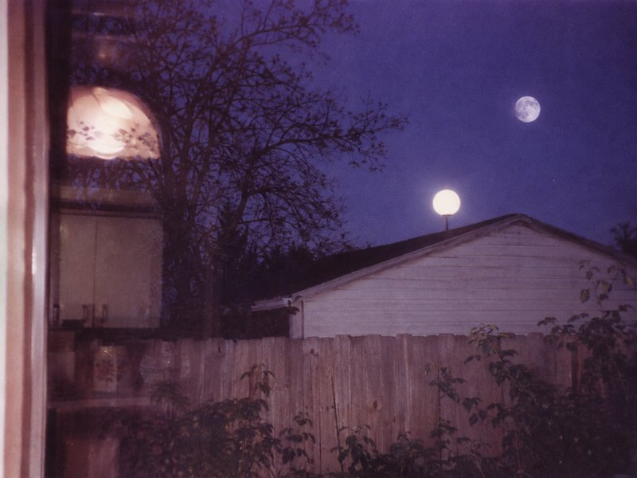
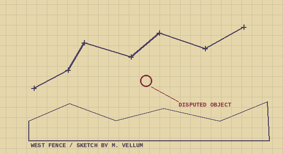

One roll of film.
Two alleged moons.

The higher disc moved west between exposures. The lower disc traveled approximately the width of Mrs. Henderson’s garage when Mabel moved to the other end of the sink.

The straight line joining seven stars is a pencil crease. The committee has voted to leave it in the record.